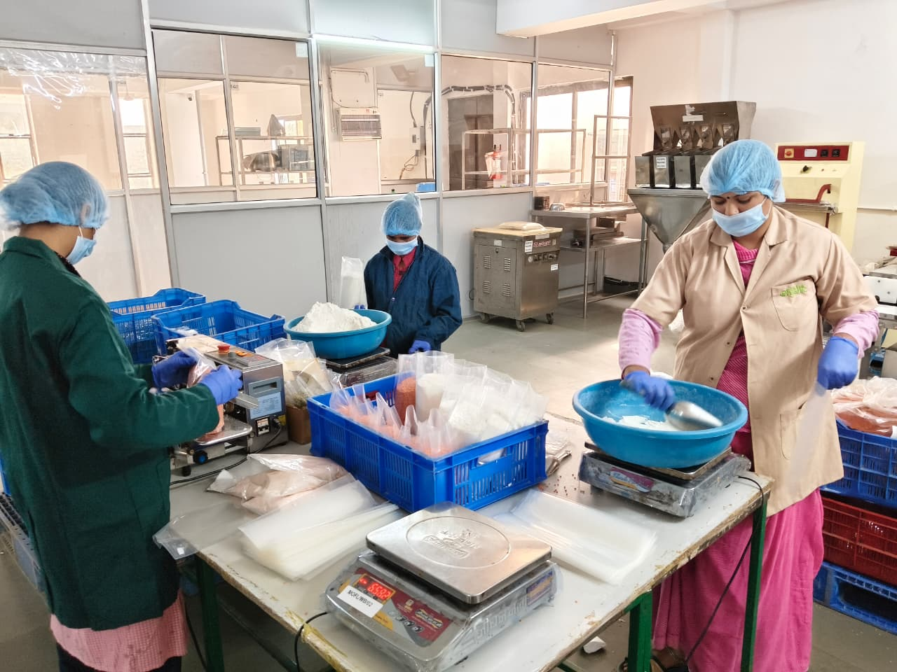

we ensure that each product bearing the Morarka Organic name meets uncompromising standards of purity, safety, and nutritional excellence
Quality Management


we ensure that each product bearing the Morarka Organic name meets uncompromising standards of purity, safety, and nutritional excellence

Certified Organic
The kind of demands & expectations that consumers have for quality of food products the world over met by Morarka. Organic, is just one part of it. In addition, there are many others as well, in fact numerous other standards of quality and regulations are also applicable to meet the consumer demands. Some of them may be desired quality parameters affecting the buying decisions, but some are statutory and are legally binding. While many food safety, hygiene, contamination and adulteration standards are legally binding, the size, colour, aroma, taste like
At Morarka Organic, quality is managed like a religious ritual. Every effort is made to deliver the very best to the consumers. Both statutory provisions governing the quality of product as well as other parameters are monitored very closely through a very elaborate process. It involves both lab-based quality checks as well as process based monitoring techniques.

Some significant quality values associated with every product from Morarka Organic’s portfolio also include the variety, place of cultivation and all the geographically associated characteristics of the food products sold. With the result almost one third of the products presently being sold also qualify for registration under Geographical Indications, popularly known as GI products.
Standards & Systems
Good Agricultural Practices (GAP) refers to methods, which when applied to agriculture, produce results that are in harmony with the values of the proponents of those practices. Multiple GAP codes, standards and regulations have been developed in recent years by not just the food industry and producer organizations, but also governments and NGOs. GAP aims to codify agricultural practices at farm level for a range of commodities. The objective of GAP codes, standards and regulations implanted at the farm level include, to a varying degree as follows:
Safety of the food supply is the key to consumer confidence. In the past, periodic plant inspections and sample testing have been used to ensure the quality and safety of food products. HACCP was introduced as a system to control the safety of the product when manufactured, rather than trying to detect problems by testing the finished product.
This system is based on assessing the inherent hazards or risks in a particular product or process and designing a system to control them. Specific points where the hazards can be controlled in the process are identified and monitored regularly to keep the Critical Control Points under control.
The HACCP system has been successfully applied in all the Production Units. The system fits in well with modern quality and management techniques. It is especially compatible with the ISO 22000 and just in time delivery of ingredients. In this environment, consumers are assured of receiving quality products matching their specifications
Food reaches consumers via supply chains that may link many different types of organizations and may stretch across multiple borders. A weak link may result in unsafe food, which is dangerous to consumers? health. ISO 22000 has made implementation of the HACCP system easier as it incorporates food hygiene principles of HACCP. Another benefit of ISO 22000 is that it extends the system management approach of ISO 9001:2000 which though widely implemented in all sectors does not specifically address food safety. The ISO 22000:2005 specific requirements have enabled Morarka Organic to achieve the following objectives